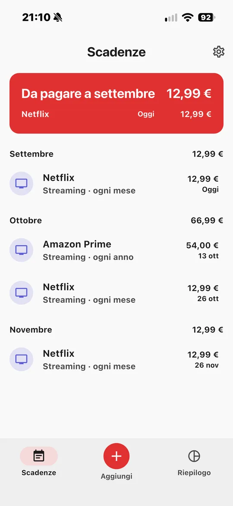
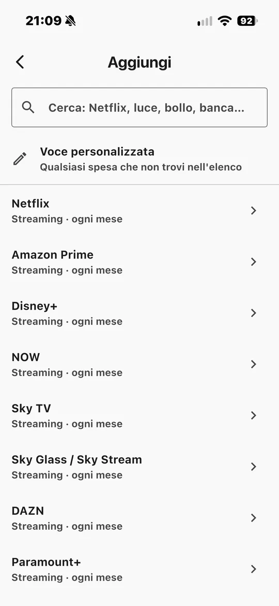
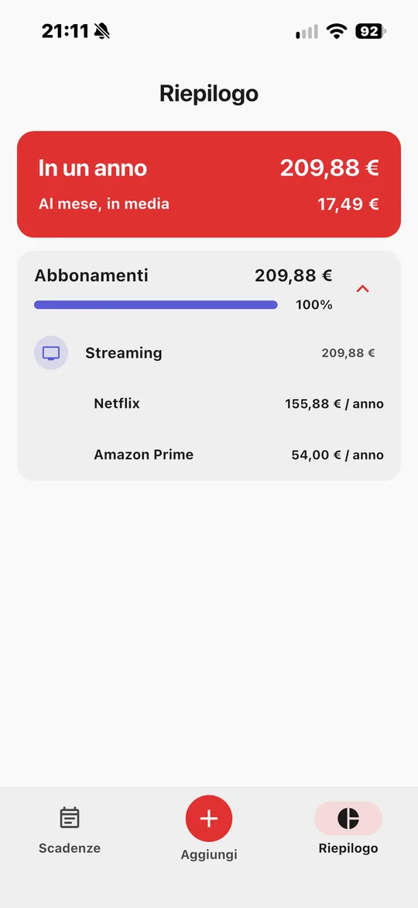
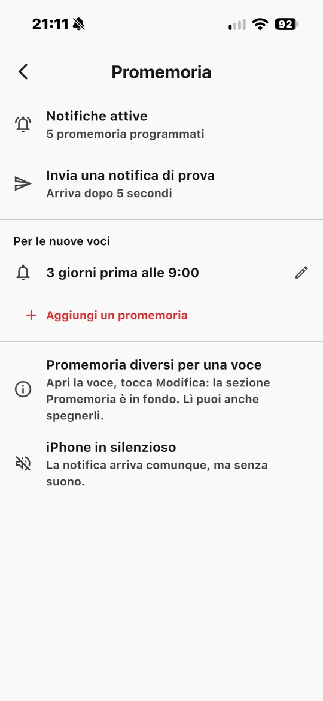
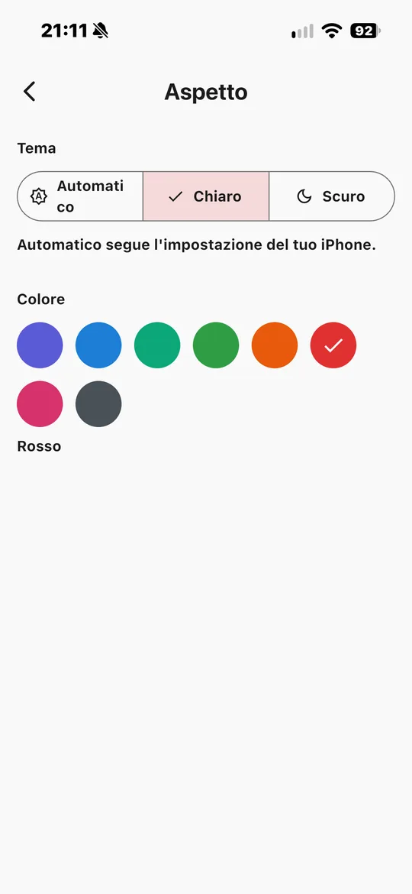
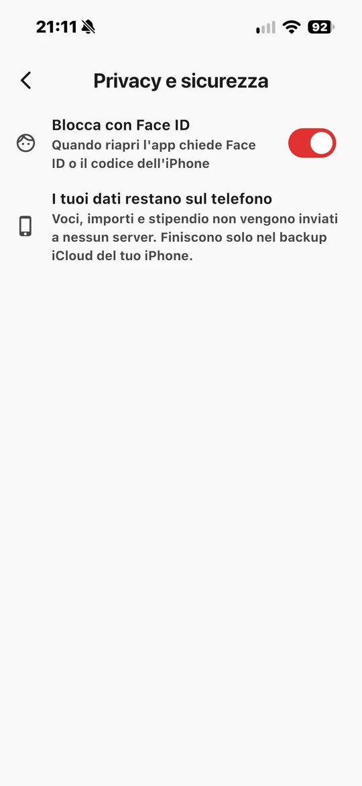
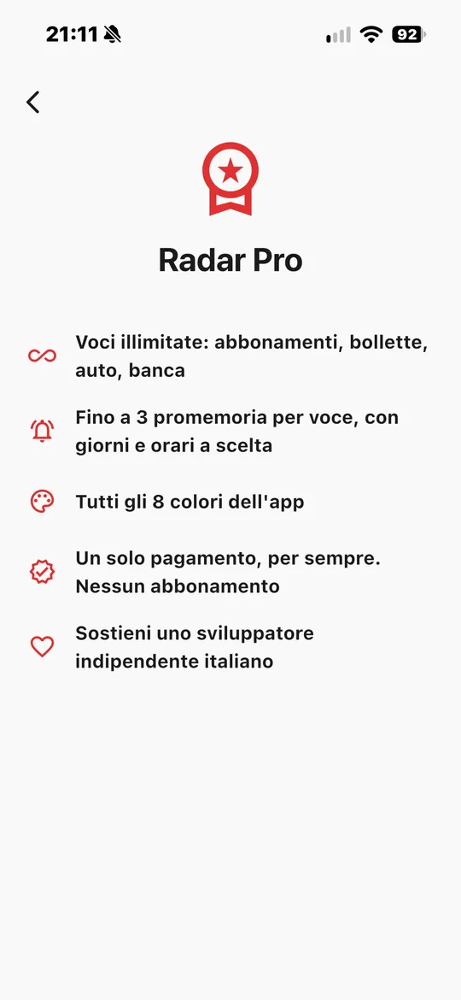

Radar
Scadenze
Abbonamenti, bollette e scadenze dell'auto in un'unica app. Ti avvisa prima di ogni pagamento, così niente ti coglie di sorpresa.

Cos'è
Tutte le spese che tornano, in un posto solo.
Netflix e Spotify, la bolletta della luce, il telefono, il bollo e l'assicurazione dell'auto: ogni spesa ricorrente ha una data diversa ed è facile dimenticarne una. Radar Scadenze le mette tutte insieme, ti dice quanto paghi ogni mese e ti avvisa qualche giorno prima di ogni scadenza.
Oltre 170 servizi pronti
Streaming, telefonia, luce e gas, banche, assicurazioni. Scegli e sono già compilati.
Anche l'auto
Bollo, RC auto e revisione accanto agli abbonamenti, con le loro scadenze annuali.
Promemoria puntuali
Una notifica qualche giorno prima del rinnovo, all'ora che preferisci.
Quanto spendi davvero
Il totale del mese e dell'anno, diviso per categoria. E, se vuoi, quanto ti resta dello stipendio.
Privata per davvero
Niente account e niente pubblicità. I dati restano sul tuo telefono, protetti da Face ID o impronta.
Pronta in un minuto
Scegli i servizi che usi al primo avvio e la tua lista è già fatta.
Gratis e Pro
Parti gratis. Passa a Pro quando vuoi.
La versione gratuita è completa, non una prova a tempo. Radar Pro si sblocca con un acquisto unico dentro l'app.
Per sempre
- Fino a 5 voci
- 1 promemoria per voce
- Catalogo di oltre 170 servizi
- Totali del mese e riepilogo annuale
- Stipendio e "Ti restano"
- Blocco con Face ID o impronta
- Tema chiaro, scuro o automatico
Paghi una volta, tuo per sempre. Nessun abbonamento.
- Tutto quello della versione gratuita
- Voci illimitate
- Fino a 3 promemoria per voce, con giorni e orari a scelta
- Tutti gli 8 colori dell'app
- Si ripristina gratis sui tuoi altri dispositivi
Perché scegliere Pro
Tutte le tue spese, non solo cinque.
Le spese sono più di 5
Streaming, telefono, internet, luce, gas, bollo, assicurazione: una casa normale le supera in fretta. Con Pro le segui tutte.
Avvisi quando servono a te
Per il bollo una settimana prima, per Netflix il giorno stesso. Fino a tre promemoria per voce, ognuno col suo orario.
Niente abbonamento
Un'app che ti aiuta a tenere d'occhio gli abbonamenti non dovrebbe esserlo. Paghi una volta e basta.
Sostieni chi la fa
Radar è sviluppata da una persona sola, senza pubblicità. Pro è ciò che la fa crescere.
Galleria
Dai un'occhiata all'app.
Scorri di lato per vedere tutte le schermate →






Assistenza
Domande frequenti
Le notifiche non arrivano
Apri Impostazioni dell'iPhone → Notifiche → Radar e attiva "Consenti notifiche". Nell'app, da Impostazioni → Promemoria, puoi inviare una notifica di prova. Se la modalità Full immersion è attiva, le notifiche potrebbero essere silenziate.
Ho cambiato iPhone: come recupero Radar Pro?
Accedi con lo stesso ID Apple usato per l'acquisto, apri Impostazioni → Radar Pro nell'app e tocca Ripristina acquisti. Non paghi di nuovo.
Le mie voci passano sul nuovo iPhone?
Le voci sono salvate solo sul tuo iPhone. Passano sul nuovo telefono se lo ripristini da un backup (iCloud o computer) del vecchio.
Radar Pro è un abbonamento?
No. È un acquisto unico: paghi una volta e resta tuo per sempre, senza rinnovi.
Come chiedo un rimborso?
I pagamenti sono gestiti da Apple: puoi chiedere un rimborso su reportaproblem.apple.com.
Non hai trovato la risposta? Scrivimi a giardullo1988@gmail.com. Rispondo di solito entro 2 giorni lavorativi.